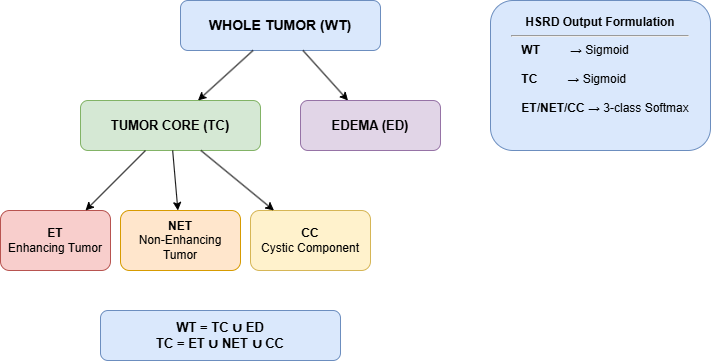
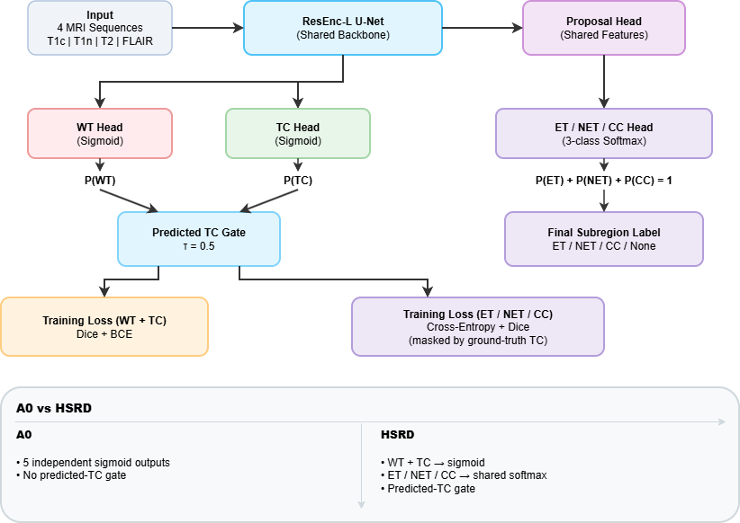
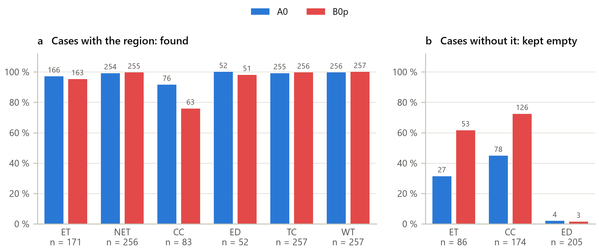
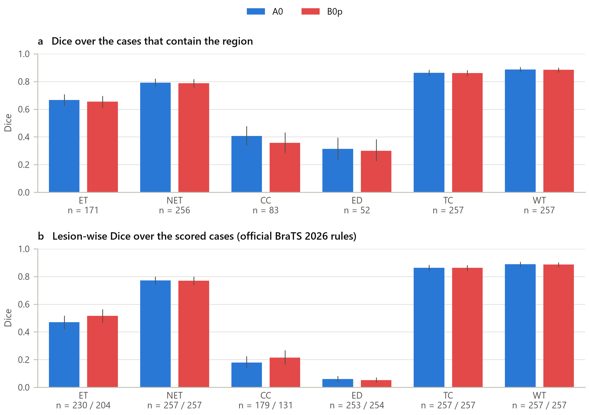

Doctors outline brain tumors on MRI scans to plan treatment, and deep learning can do much of that outlining automatically. The tumor is split into nested parts, and some of those parts should never overlap. The standard tool, nnU-Net, doesn't enforce that, so it can mark the same spot as two things at once. We designed HSRD, a new output head for nnU-Net v2 that makes those parts mutually exclusive by construction. Tested on 257 children's MRI scans, it produced no conflicting labels and roughly halved the false alarms for the rarer tumor parts, at the cost of missing some small cysts.
Tumor parts that overlap, and parts that shouldn't
The BraTS-PEDs challenge labels every pediatric tumor scan with four tissue types: enhancing tumor (ET), non-enhancing tumor (NET), cystic component (CC) and edema (ED). They combine into nested regions: the tumor core (TC) is ET + NET + CC, and the whole tumor (WT) is the core plus edema.

nnU-Net's region mode predicts every region with its own independent yes/no output (a sigmoid). That handles the nesting well, but nothing stops it from saying a voxel is both enhancing tumor and cyst, or from predicting a subregion outside the tumor core altogether. In our checks, the standard model did this in 48 of 52 validation scans.
Hybrid Sigmoid-Softmax Region Decomposition
HSRD keeps what works and fixes what doesn't:
- Keep sigmoids for the nested regions. Whole tumor and tumor core still get independent yes/no outputs.
- One softmax for the siblings. ET, NET and CC share a single three-way output, so their probabilities always add up to 1. They have to compete, and can't overlap.
- Train them only where they belong. The sibling loss is computed only inside the real tumor core.
- Gate them at prediction time. Subregions are only kept where the model predicts tumor core (probability above 0.5).

HSRD keeps independent sigmoid outputs for WT and TC while replacing the three sibling subregion outputs with a shared three-class softmax.From the thesis abstract
It costs nothing extra: the HSRD model has exactly the same 102,028,217 parameters as the standard one and used the same peak GPU memory (13.2 GB). The implementation is four new files plugged into nnU-Net, with no changes to nnU-Net's own code.
257 scans, five-fold cross-validation
- Data: all 257 labeled cases of the BraTS-PEDs 2025 training set. Each case has four MRI sequences (T1c, T1n, T2, FLAIR) and expert labels.
- Fair comparison: with five-fold cross-validation, every scan was predicted by a model that had never seen it.
- Baseline: the standard nnU-Net v2 region-based model, with the same backbone, data and training budget.
- Scoring: the official BraTS 2026 pediatric scorer, using Dice (overlap), HD95 (boundary distance) and lesion-wise Dice, which also punishes false alarms. Differences were checked with paired Wilcoxon tests and Holm correction.
Fewer false alarms, same big-picture accuracy
Consistent by construction
HSRD produced zero conflicting sibling predictions and zero subregion predictions outside the tumor core. That follows from the design, so it holds on every scan, not just on average.
Five-fold results on all 257 scans
| What we measured | Standard nnU-Net | HSRD |
|---|---|---|
| Tumors without enhancing tumor, correctly left empty | 27 / 86 | 53 / 86 |
| Tumors without a cyst, correctly left empty | 78 / 174 | 126 / 174 |
| Stray false enhancing-tumor blobs | 570 | 446 |
| Lesion-wise Dice, enhancing tumor | 0.469 | 0.515 |
| Lesion-wise Dice, cyst | 0.180 | 0.214 |
| Dice, whole tumor | 0.888 | 0.884 |
| Dice, tumor core | 0.864 | 0.862 |
| Cysts found (out of 83) | 76 | 63 |


The big regions are effectively unchanged. The gains come from the rare ones: HSRD is much more willing to say "there is no enhancing tumor here" when that's true, which removes false alarms. The baseline still traces the outlines of the lesions it finds slightly better.
In short, over five folds [HSRD] is the better detector of ET and CC lesions in the sense of fewer false alarms, and [the standard model] draws the outlines of the lesions it finds slightly better.From Chapter 5, Result Analysis
Honest limitations
- Missed cysts. Competing in one softmax made HSRD more cautious about cysts: it found 63 of 83, against 76 for the baseline.
- Not a clear accuracy win. The lesion-wise improvements for enhancing tumor were not statistically significant after correcting for multiple comparisons, so HSRD is a structural improvement, not a proven accuracy one.
- Edema is still hard. Both models score poorly on edema (lesion-wise Dice about 0.06), because both derive it as "whole tumor minus core".
- One dataset. The results come from one pediatric dataset with one training run per split. More random seeds and external hospitals are the next step.
Who made this
Authors: Md Saifuddin Tanjil, Jawad Adit Chowdhury, Firuz Tahsin Rodshi, Miftahul Zannat
Supervisors: Shoaib Ahmed Dipu (Lecturer) and Dibyo Fabian Dofadar (Senior Lecturer), Department of Computer Science and Engineering, BRAC University
Thanks to the BraTS-PEDs organizers and data contributors, and to the nnU-Net developers for their open-source framework.
This page is a summary written for a general audience. Figures and quoted passages are reproduced from the thesis, © 2026 BRAC University.